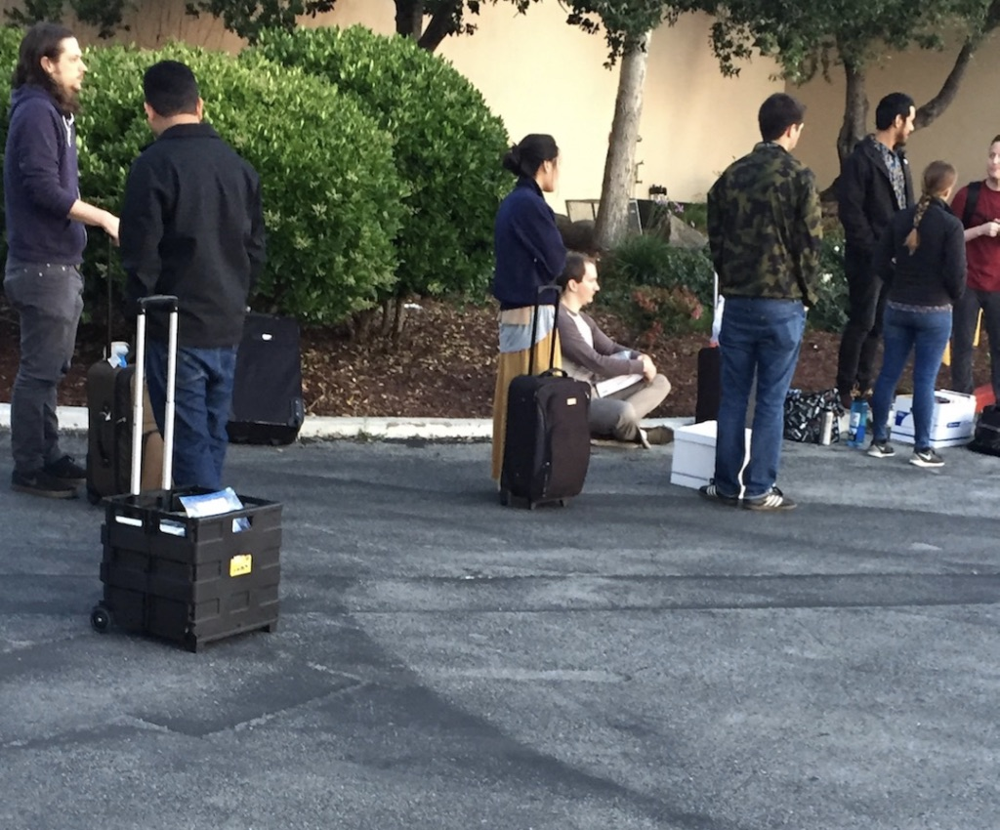

最近有好友在准备今年10月份的PE考试，网上的攻略有一些，但针对HVAC的好像还没有，特别是对于下午专业方向考试的资料和攻略都没有。去年5月考的试，花了差不多小半年的时间准备，想着要不写一些东西，或许能够对后面准备考试的人有些帮助。先贴一张当时查到考试通过的手机截图给大家提提气：
PE,也就是Professional Engineer的简称，按照中国的标准或许可以翻译成注册工程师，也算做是美国工程师能考到的最高头衔了吧，总之有了这个证，盖盖章也有公信力了。
一般意义上能够参加PE考试都需要有至少5-6年的工作经验才可以，然而少数州（例如加州）对有硕士及以上学历的可以只要有1年工作经验。所以准备走EIT, PE这条路的同学可以把申请的州放在加州。EIT还好，现在是可以异地机考，PE目前还只可以纸笔考试，所以注册在加州则必须要到加州考试。（不过据说NCEES好像也在努力把PE考试改为机考）
考试准备的资料
由于考试是开卷考试，所以考试的书还是挺重要的。前后一共准备了差不多5-6个月，其实和通常之前的考试一样，真正有效果的准备往往都是考试前的1-2个月。11月搬的家，11月下旬开始准备考试。考试我所用的教材和准备材料如下：
- Mechanical Engineering Reference Manual for the PE Exam, 13th Ed
- Six-Minute Solutions for Mechanical PE Exam HVAC and Refrigeration Problems, 2n Ed
- PE Mechanical Engineering:HVAC and Refrigeration Practice Exam
- Mechanical PE Practice Examination,3rd Edition
- Practice Problems for the Mechanical Engineering PE Exam
- 4 ASHRAE Handbooks
- ASHRAE pocket book
- ASHRAE 90.1/62.1
- A Dictionary of Mechanical Engineering
放一张资料的截图：
上述资料列表里的1，4，5是针对上午考试的。当时是花了差不多3-4个月的时间把MEMR从头到尾过了一遍。当然研究了考试大纲后发现，重点考的内容是热力学循环，流体力学和风管设计，例如泵和风扇的选取。由于是开卷考试，如果能够熟悉每一章的内容，考试的时候还是有足够的时间去翻的。所以一些公式，图表的不用记，知道在什么地方，能翻到就好了。MEMR书中的例题，建议过一遍，不需要做到题题都会做，但一般例题中要求查的表格数据还是比较重要的，我的习惯是用小贴纸标出比较重要的表格，在每章的扉页做个简单的提纲，之后再另做一个属于自己的diy大纲，方便自己考试的时候查
资料5的题目难度比较大，会远远超过考试难度，我就简单选做了热力循环（蒸汽循环，燃气循环和制冷循环）和一些计算泵负压的题用以熟悉表格。资料4我差不多抽了一个周末（周六下午，周日一天）当作考试前的模拟考试，做完感觉不太好，不过通过做题，让我又重新回MEMR标记了许多自己以前看书所遗留的知识点。
总之MEMR第一边看书感觉是必要的，但真正要想明白什么重要，什么不重要，关键还是做题，做完题之后再回书本找关键考到的知识点，做标记，熟悉位置，和查图查表的流程，顺序。
资料2，3，6，7，8主要是为了下午的专业考试做准备，其中资料7如果你是ASHRAE的会员，连续4年就可以集齐4本，当然，你也可以问周围的同事借。ASHRAE的4本书中，我觉得第一本fundamental有必要重点看一遍，其中psychrometric chart, duct, load calculation比较重要。对于余下的三本，熟悉每章的内容就可以了吧。一般下午的考试，如果考到也就是属于查到公式，带入数值就可以得到结果。差不多花了一个周六的下午加晚上读完fundamental，和余下的三本书
资料2可以当作练习的习题，帮你找出自己看书中所忽略的点。
资料9，由于担心考试中会有一些涉及到机械设计的专业名词，比如螺纹，螺母等可以查，但考试的时候我记得没有用到。
资料3的难度和考试比较像，但感觉在热力学循环上的内容没有实际考试的比重多，但可以作为前期找感觉，和后期模拟考的内容。
其他准备的材料和可以上的一些课
我没有上课，不过同事推荐了一些网上课程，还有一些有用的链接供参考：
- Video Review for the Mechanial PE HVAC & Refrigeration Examppi上的授课， 这个是同事推荐的，可能对下午的考试内容有帮助
- Engineering Cookbook 同事推荐是一本比较好的工具书，针对泵和风扇的选择，我看了一遍，一般推荐吧。
- Dr Tom’s Classroom他的youtube视频可以看一看.
- Engineering Prof Guides,这本网络书对下午的考试还是蛮有帮助的。
- 一个中文的PE复习博客这篇博客虽然是Fluid那一块的，但对我当时复习考试也有帮助，关于考试的详情，考试报名可以参考
- PPI的复习攻略
关于考试当天
我当时是选的San Mateo的考场，里SFO比较近，附近正好也有Minyan同学接机。其他州的考场情况不清楚，但加州的考场就是在飞机机库里，人生第一次和几千人一起在一起考试，还是蛮壮观的.考试当天，考场周围的酒店都是去考试的朋友，拖着行李箱去考试：

考试的时候，除了NCEES要求的一些内容（所有资料都必须要装订起来），还要注意不要带任何电子产品。记得考试到下午快交卷前1个小时，坐我左前方的一个印度妹子，就是因为带了Apple watch被请出考场了。
考试后记
4月中旬考的试，5月中旬就慢慢有消息出来了。这个网络论坛Engineering Board可以和老美一起讨论，等待成绩出来。成绩是由NCEES出，但每个州出结果的时间不一样。加州的成绩好像一般出的都比较慢。周三快下班上论坛看到加州的结果出了，拿手机查了一下，和父母打个电话报个喜。憋着留到周五fireball friday的时候公司同事问起才说出考过了。特别淡定，“You know, we are Asian.”
收到加州Engineering Board的通知后，就可以拿着注册号去这个Engineerseals.com订图章了(也可以去其他网站)。考试虽过了，不过工作在这个行业，经验还是最重要的，弄个章，自己盖了玩玩。
考试感想
和所有的考试一样，结果对于现阶段的人生似乎并没有啥至关重要的影响，第二天该上班还是得上班。不过，花上半年的时间去准备考试还是一项系统工程。至于收获，表面上在自己的名字后面可以加一个头衔，改了linkedin的资料，更换了名片，代表公司出去见客户也有不一样的待遇，可能也会有更大的职业发展空间。但可能最重要的实质，在于重新学了一遍专业知识，对工作所用到的知识有了不一样的认识吧，知道一些数据是从什么地方得到的。
工作之后，发觉能够静下心来看看书真的是一种享受。
人生目标三大P(PE,PhD,PMP)。当然了PE考完，下一个目标有英联邦的Chartered Engineer,还有中国的注册设备工程师。至于PE和中国注册设备工程师证的通过率，前者和后者比才真是弱爆了，毕竟，We are not only Asian, we are Chinese.